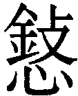

咸卦 澤山咸
咸卦 澤山咸
咸亨，利貞，取女吉。初六，咸其拇。六二，咸其腓，凶，居吉。九三，咸其股，執其隨，往吝。九四，貞吉，悔亡，憧憧往來，朋從爾思。九五，咸其脢，无悔。上六，咸其輔頰舌。
【卦名】
今本：咸 帛書：欽 歸藏：欽 秦簡：咸 清華簡： 海昏：咸
咸
咸音賢，在易經中作「感」解釋，但咸的原始字義也有砍傷、殺的意思。另有減、緘等涵義。
《彖傳》：「咸，感也。」咸通常解釋為皆，但在易經特別做為「感」解釋，為什麼？可能形近之假借，咸為無心之感。個人竊疑，或許與商代的巫咸有關。可能因為巫咸善於占筮，以及與鬼神溝通等靈應之事，因此以咸表達「感應」的意思。
巫咸原是商朝重臣，位比伊尹。後來也變成了神話人物，有說他是堯舜時代掌筮法的，也有傳說他幫黃帝占筮過。《世本．作》曰「巫咸作筮」，以巫咸為發明制作了筮法。據《史記》記載，商王太戊在位時，有次遇到宮廷內長出很大的一叢桑穀（今之構樹），一天內就長成一個大拱門，太戊認為這是不祥之兆而相當害怕，採用伊陟建議開始修德，後來桑穀果然就死了，然後「伊陟贊言于巫咸」。
自古至今，咸這個字多數作為皆的意思，《爾雅．釋詁》：「咸，皆也。」《說文》：「皆也，悉也。從口從戌。」如《尚書》「天下咸服」、「萬邦咸寧」、「咸聽朕命」。易經中能否做此解釋呢？
《周禮》記載的「九簭」也就是九種筮問之命題，「二曰巫咸」，巫咸即筮咸，筮問的是關於「咸」的問題，鄭注：「咸猶僉也，謂筮眾心歡不也。」賈公彥疏：「謂國有營建之事，恐眾心不齊，故筮之也。」此咸取「皆」的意思，意指眾人之心，筮咸就是筮問眾人是否全都同意，是否同心。依此推論，咸卦可能關乎國家有建設的時候眾人是否皆同意的筮問。「咸亨」為眾人皆同意之後乃亨。
咸既然在《周易》中通解為感，為何不以感為名？傳統有種看法認為，就是因為咸有皆義，以示其大公而皆感。如陳夢雷：「不曰感而曰咸。咸，皆也。无心之感，无所不感也。所謂寂然不動，感而遂通天下之故者。若有心于感，則非易之道矣。故卦名咸。」
就文字的發展來看，感字發展甚晚，大約至戰國晚期的鐘鼎文才出現，而且應該是從咸字演變而來。
咸也可能是斬、砍殺的意思。因咸字從戌從口。戌是一種長柄的斧頭。甲骨文中的口象器物，也可能象人頭，因此咸有砍頭、破壞、殺的意思。吳其昌：「咸為一戊一碪之形...本義為殺。」現代易學家多有支持此說者，如高亨、張立文等。另一說認為咸字之口是文字之增繁。
陳鼓應則認為，咸應是緘之假借，禁、禁止的意思。臨初、二兩爻「咸臨」，帛本都作「禁臨」，此或可證明陳鼓應的見解。
《禮記》：「凡封，用綍去碑負引。君封以衡，大夫、士以咸。」注：「封，《周禮》作窆。窆，下棺也。此封，或皆作斂，......然則棺之入坎為斂......咸讀為緘。」此咸借為緘，即「束棺」，用與捆綁棺木的繩子。
欽
歸藏與帛書《周易》卦名都作「欽」，清華簡為欽的異體字。欽為欽敬、欽佩、欽羡、欽慕的欽，與感的意思相通。
今本《繫辭傳》「屈信相感而利生焉」帛書作「詘信相欽而利生焉」，「情偽相感而利害生」帛書作「請偽相欽而利害生」，「感而遂通天下之故」帛書作「欽而述達天下之故」，可見帛書易傳中欽字皆假借為感。
欽在《尚書》中也很常出現，《爾雅．釋詁》：「欽，敬也。」《尚書．堯典》「欽若昊天」，《大禹謨》「欽哉慎乃有位」的欽都解釋為敬。
《說文》：「欽，欠皃，从欠金聲。」段玉裁注：「欠皃：凡气不足而後欠。欽者，倦而張口之皃也，引伸之，乃欿然如不足謂之欽。《詩．晨風》憂心欽欽，傳曰：思望之心中欽欽然。《小雅》鼓鐘欽欽，傳曰：欽欽言使人樂進也。皆言沖虛之意。《尙書》欽哉，皆令其惟恐失之也。《釋詁》曰：欽，敬也。」「欽歁欿歉，皆雙聲韵字，皆謂虛而能受也。」
欽字是從欠字發展而來，《說文》直接以「欠貌」來解釋欽。欠原義為打哈欠，後引申為「欠缺」的欠，有不足之義，因此亦通減，咸亦有減之義。
依段玉裁注，欽為沖虛及虛而能受之義，此即《象傳》所說的「君子以虛受人」。
【卦義】
感，感動，感應，欽慕；緘密、禁止；砍傷。
咸有三義：一是感動、感應。但感要能夠知止，所以也有緘，禁止、有所不為之戒。有感而不能止，那麼就可能因此而砍傷。因此六爻以感而能止者為吉。
咸卦上澤兌，下艮山，高山下於水澤，為山澤通氣之象。少男下於少女，六爻相應，男女相交感，婚合之象，因此卦辭說「娶女吉」。鄭玄說，三十之男，以下二十之女，正而相親說，取之則吉也。
朱熹：兌柔在上，艮剛在下，而交相感應，又艮止則感之專，兌說則應之至，又艮以少男下於兌之少女，男先於女，得男女之正，婚姻之時，故其卦為咸。
天下感情最豐富的少男少女相遇相感，進而結婚，這也正是家道的開始。所以《易經》下經以咸卦為始，繼之以恒：永恒。
易經上經以乾坤為始，坎離為終，這四卦正是先天八卦的四正卦，有表達經緯旁通的意味。下經以咸恒為始，咸為山澤通氣，恒則是雷風相與之卦，咸恒兩卦為反對卦，二體在先天八卦中則為兌艮震巽四隅之卦。至最末的既濟與未濟，關乎水火之交感與相融。因此下經主要在表現二體的交感（咸者感也）、交易之法則，此亦天道亨通與人倫有序之法則。
或有易學家認為，上經明天道，下經明人事。孔穎達對此評論最切：
先儒皆以上經明天道，下經明人事，然韓康伯注《序卦》破此義云：「夫易，六畫成卦，三才必備，錯綜天人，以效變化，豈有天道、人事偏於上下哉！」案：上經之內，明飲食必有訟，訟必有眾起，是兼於人事，不專天道。既不專天道，則下經不專人事，理則然矣。但孔子《序卦》不以咸繫離。《繫辭》云「二篇之策」，則是六十四卦舊分上下，乾坤象天地，咸恒明夫婦。乾坤乃造化之本，夫婦實人倫之原，因而擬之，何為不可？
在吉凶之判斷上，若是問感情，可想而知的咸是很好的一卦。但若問其餘事情，則代表與事情已有所感應，無論心裡所想的是好事還是壞事，心裡所想的事可能正在發生與應驗。若問的是健康或安全問題，那麼咸卦是凶卦，因為咸有斬傷之義，卦象上兌為毀折、損傷，下艮為背或手，為背後中傷、傷其手輔之象。得咸卦應當注意血光之災，還有身體的安全，避免受傷。於事業經營上則應當注意有人背後砍下致命的一刀，或是重要的左右手遭到致命攻擊、被挖角。
《象》曰：「咸，君子以虛受人。」言君子應該虛心待人，以同理心去了解他人，如此才能感受到對方，以及讓對方感受得到。因咸之古卦名欽就有以欽敬，以虛受人之義。就其成卦來說，則是從否卦而來，否卦上九至三而成，為下坤之虛，受上乾天之陽實。
全卦爻辭六位分別以人體的不同位置來比喻事情的感應。但若是卜問健康及安全，則可能代表的是身體不同部位的毛病。
六十四卦中咸卦與艮卦是六爻經文極為相似的兩卦，架構上都是從人身由下講到上，從腳講到口。就卦象而言，兩卦差別在外卦一艮一兌。艮卦在外是養護、照顧的作用，即《說卦傳》說的終成之義。兌在外則為毀折，砍傷之象。兩卦似有一傷一養之義。咸為傷背，艮則為養背之象。
|
咸卦 初六，咸其拇。 |
艮卦 初六，艮其趾，无咎，利永貞。 |
有人會以「速」來解釋咸卦，這是源自於《雜卦傳》：「咸，速也。」王弼：「物之相應，莫速乎咸。」李鼎祚：「相感者，不行而至，故速也。」但《雜卦傳》並不是將咸字定義為速，咸字也沒有速的意思。《雜卦傳》只是以速來闡釋咸的特質，因天底下速度最快的在於感應，凡事有所感應，就會很很快就達成。
咸亨，利貞，取女吉。
- 《彖》曰：咸，感也。柔上而剛下，二氣感應以相與，止而說，男下女，是以亨，利貞，取女吉也。天地感而萬物化生，聖人感人心而天下和平。觀其所感，而天地萬物之情可見矣。
- 《象》曰：山上有澤，咸，君子以虛受人。
- 雜卦傳：咸，速也。
- 《荀子‧大略篇》：易之咸，見夫婦。夫婦之道，不可不正也，君臣父子之本也。咸，感也，以高下下，以男下女，柔上而剛下。
感動而能亨通，利於貞定。娶女吉。
咸或作「皆」解釋，即眾人皆同意的意思。咸亨，眾人皆同意則亨。
咸卦之所以娶女吉，是因為少男居於少女之下，少男三爻又與少女三爻全都相應，陰陽男女交感之象。《周易》裡男下於女就是婚合之象，因就男上女下之卦象來說，是男女卦氣交易而相感；就男在先、女在後之順序來說，有夫唱婦隨之義。損卦少男在上，少女在下，女先於男，男女卦氣不交，《象傳》則說「君子以懲忿窒欲」，必須戒慾，可推理不宜娶女或結婚。
孔穎達：夫婦之義，必須男女共相感應，方成夫婦。既相感應，乃得亨通。若以邪道相通，則凶害斯及，故利在貞正。既感通以正，即是婚媾之善，故云「咸亨，利貞，取女吉」也。
丘富國：咸，二少相交者，夫婦之始也，所以論交感之情，故以男下女為象。男下於女，婚姻之道成矣。恒二長相承者，夫婦之終也，所以論處家之道，故以男尊女卑為象。女下於男，居室之倫正矣。損雖二少，而男不下女，則咸感之義微。益雖二長，而女居男上，則恒久之義悖。此下經所以不首損益而首咸恒與？
【字義】
取：通娶。取女，即娶女。取字甲骨文為拿人耳朵，應是古代戰爭計算戰功時以割取敵人的左耳來計數，後引申為拿取、取得的意思，又引申為娶，為娶字的初文。《說文》：「捕取也，从又从耳。《周禮》：『獲者取左耳。』《司馬法》曰：『載獻聝。』聝者，耳也。」取在甲骨卜辭中就有娶的用法，古文中亦常見，如《詩經》中〈南山〉：「取妻如之何？必告父母。」〈衡門〉：「豈其取妻，必齊之姜。」〈伐柯〉：「取妻如何？匪媒不得。」
君子以虛受人：君子以謙虛之心來接受他人。帛書卦名作「欽」，依段玉裁解釋，欽字即以虛受人之義。虞翻：「君子謂否乾。乾為人，坤為虛，謂坤虛三受上，故以虛受人。艮山在地下為謙，在澤下為虛。
初六，咸其拇。
《象》曰：咸其拇，志在外也。
感應到腳拇指。
初位在六爻中為趾、拇之位。其初難知。這是易動又很末稍的地方，有過於妄動，且難以感動人心之弊。若談感應，則給人的感動非常膚淺而不實。
咸若解釋作砍傷，那麼此爻就是砍傷了腳指。
拇指的是腳拇指，腳拇指有幾種象徵意義。一它是行動的開始。二它是一個非常容易自己亂動的地方。三，只是人體非常末稍的地方，離感動人心相當遠。
【字義】
拇：《釋文》：「拇，子夏作，荀作母。」《孫氏集解》：「馬融曰：拇，足大指也。鄭薛同。荀爽曰：母陰位之尊。」虞翻：「拇，足大指也。艮為指。坤為拇，故咸其拇。失位遠應，之四得正，故志在外。謂四也。」
六二，咸其腓，凶，居吉。
《象》曰：雖凶居吉，順不害也。
感應到小腿肚，凶。居靜不動為吉。
小腿是極好動的部位，象徵過於躁動，因此而遭致凶災，最好是居靜不要妄動則吉。
或者可解釋為砍傷了小腿，凶。安靜不動就吉。居為不動，靜、定的意思。
《象》曰：「雖凶居吉，順不害也。」居靜之所以為吉，是因為柔順而不會受到傷害。
【字義】
腓：鄭玄：「腓，膊腸也。」《釋文》：「腓，荀作肥。」 王廙：「動於腓腸，斯則行矣。」《孫氏周易集解》引《口訣義》：「荀爽曰：肥謂五也，尊盛故稱肥。」
居吉：居原義為蹲，此或言小腿受傷，因此能夠蹲下為吉。居通凥，即凥處之義，即居靜不動。居吉，對應於前句腓之躁動為凶。王弼：「感物以躁，凶之道也。由躁故凶，居則吉矣。」朱震：「若居位不動，順理以待上之求，不害也。二動失位為疾，有害之意。坤，順也，易傳曰：質柔上應，故戒以先動求君則凶。居貞自守則吉。」朱熹：「有中正之德，能居其所，故其占動凶而靜吉也。」
順不害：象傳中的「順」就象來說，指的多是比應之象，即六二承順於九三。但廣義的來說，六二具有柔順而中正之美德，是能柔順而得吉者，因此曰順不害。
九三，咸其股，執其隨，往吝。
《象》曰：咸其股，亦不處也。志在隨人，所執下也。
感動其大腿，執意於隨足而動，前往的話就有恨惜。
股是大腿，依王弼注，大腿是隨足而動者。執為執著，隨則意指股之隨足而動，執其隨比喻人沒主見而只會隨人起舞。所以《象》曰：「志在隨人，所執下也。」意指人像股一樣，以隨人為志，這種志氣相當低下。
隨亦通墮、墜。執通持，亦有鞏固之義。如遯六二「執之用黃牛之革，莫之勝說」，革初九「鞏用黃牛之革」。「執其隨」即扶持其人以免人墜落、跌倒。此承「咸其股」而言，因大腿受傷，因此靠著扶持而免於倒下。
【字義】
咸其股，執其隨：傳統儒者皆依從王弼解釋：「股之為物，隨足者也。進不能制動，退不能靜處，所感在股，志在隨人者也。志在隨人，所執亦以賤矣。用斯以往，吝其宜也。」王弼意思為股是隨足而動者，「執其隨」的隨指的是大腿之隨足而動，引申之為隨人起舞者。執其隨意思為，所執著者只是一些隨人起舞的事，以此為志則賤。但後世註家誤解為以隨為足。事實上隨字從來就沒有足的意思，王弼意思也不是以隨為足。《周易》中有隨卦，經文中出現隨者有隨六三「隨有求得」，九四「隨有獲」。而與咸卦經文架構很像的艮卦則在六二說「艮其腓，不拯其隨」。咸為感動或坎傷，而艮為止為照顧。咸六三說「咸其股，執其隨」，艮六二則說「艮其腓，不拯其隨」。執字在《周易》中則有遯六二「執之用黃牛之革，莫之勝說」，師六五「利執言」，執在《詩經》中多作持解釋，「執其隨」也有持守之義，朱熹：「執者，主當持守之意。」但在遯卦《象傳》則以「固」解釋執，革卦中初九「鞏用黃牛之革」，可見執通鞏。俞樾認為隨假借為骽，《群經平議》：「王氏既以股為隨足之物，豈又以足為隨腓之物乎？轉展遷就，以成其說，遂使字無定詁，經無定義，殊非注經之體矣。竊疑，隨乃骽之叚字，古無骽字，故以隨為之。執其隨者，執其骽也。不振其隨者，不振其骽也。隨從隋聲，與妥相近。《儀禮．士虞禮》注曰：今文墮為綏。《特牲饋食禮》注曰：墮與桵讀同，是隋聲妥聲之字古每通用也。」骽，腿的異體字。《玉篇》：「腿也。」李零採用俞樾看法，但將骽解釋為髖。
亦不處也：處通居，居處之義。與六二居吉的居同義。
九四，貞吉，悔亡。憧憧往來，朋從爾思。
《象》曰：貞吉悔亡，未感害也；憧憧往來，未光大也。
《繫辭》：《易》曰：「憧憧往來，朋從爾思。」子曰：「天下何思何慮？天下同歸而殊塗，一致而百慮。天下何思何慮？日往則月來，月往則日來，日月相推而明生焉。寒往則暑來，暑往則寒來，寒暑相推而歲成焉。往者屈也，來者信也，屈信相感而利生焉。尺蠖之屈，以求信也。龍蛇之蟄，以存身也。精義入神，以致用也。利用安身，以崇德也。過此以往，未之或知也。窮神知化，德之盛也。」
貞定則吉，後悔消亡。反之，若內心不定，憂慮而想法搖擺，讓朋友們全都跟著你的想法而無所適從，那麼就有悔。
言意志要堅定則吉而悔亡。反之，意志不堅，搖擺不定則會後悔。四為多憂之位，憂慮之象。居上體兌下，動而成坎，動有悔之象。居互體三陽之中，朋從之象。
九四爻所感而動者為心的位置，因此曰憧憧。但咸卦以能定能緘為吉，憧憧往來則心已妄動。
《繫辭傳》引子曰，孔子以「同歸而殊塗，一致而百慮」註解此爻。
【字義】
憧憧往來，朋從爾思：「憧憧往來，朋從爾思」有兩種解釋。一、憧憧往來為內心憂慮猶疑不決的樣子。憧，音「充」，或「同」。憧憧，內心憂慮的樣子。往來，因為猶疑不決而來來去去，不知所往。朋從爾思，眾人跟隨於你的思慮搖擺而無法安定。朋，同類，朋友。爾思，你的思慮，也就是指「憧憧往來」，猶疑不決的憂慮。大家都跟著你猶疑搖擺，則事情難以進行。所以《象》曰：「憧憧往來，未光大也。」《說文》：「憧，意不定也。」段注：「咸九四曰：憧憧往來。劉表章句曰。憧憧，意未定也。」虞翻：「憧憧，懷思慮也。之內為來，之外為往。欲感上，隔五；感初，隔三，故憧憧往來矣。」《孫氏周易集解》引劉氏：「憧憧，意未定也。」程頤以「私心」來解釋憧憧，後儒皆從之：「若往來憧憧然，用其私心以感物，則思之所及者有能感而動，所不及者不能感也，是其朋類則從其思也。」二、憧憧往來為人來人往，絡繹不絕。憧憧，形容人潮絡繹不絕。朋從爾思，朋友都跟隨於你的想法。「憧憧往來，朋從爾思」為形容追隨者眾多的樣子。馬融：「憧憧，行貌。」王肅：「憧憧，往來不絕貌。」
九五，咸其脢，无悔。
《象》曰：咸其脢，志末也。
感應到背脊，無所悔恨。
各爻都有感而動，唯有此爻寂靜而不為所動。九五處尊位，感而仍居靜，好的一面來看為公正而冷靜，壞的一面來看則是冷漠而無憂憫感人之懷抱，所以《象傳》說「志末也」。只能免於後悔，無法成大事。
咸其脢亦可解釋為傷到背脊。
【字義】
脢：脢音梅，脊背肉。咸其脢，感應到脊背肉。《說文》：「背肉也。从肉每聲。易曰：咸其脢。」段玉裁：「子夏易傳云：在脊曰脢。馬云：脢，背也。鄭云：脢，背脊肉也。虞云：夾脊肉也。」
上六，咸其輔頰舌。
《象》曰：咸其輔頰舌，滕口說也。
感應到嘴巴。此比喻有口無心，只是嘴巴說說，空口說白話，不足以為信。所以《象》曰：「咸其輔頰舌，滕口說也。」
輔頰，兩腮。輔頰舌都是說話的地方。
滕，競爭。「滕口說也」意思近似於我們現今所說的只靠一張嘴、打嘴砲，只會在言語上跟人爭勝負。
【字義】
輔頰舌：馬融：「輔，上頷也。輔頰舌者，言語之具。」虞翻：「耳目之間稱輔頰。四變為目，坎為耳，兌為口舌。故曰咸其輔頰舌。」
滕口說：《釋文》：「滕，九家作乘，虞作媵。」《周易集解》：「虞翻曰：媵，送也。不得之三，山澤通氣，故媵口說也。」《孫氏周易集解》：「滕，競與也，所競者口，無復心實。」「鄭康成云：字作媵。媵，送也。咸道極薄，徒送口舌，言語相感而已，不復有志於其間。」
【彖傳注】
咸，感也。柔上而剛下，二氣感應以相與，止而說，男下女，是以亨，利貞，取女吉也。天地感而萬物化生，聖人感人心而天下和平。觀其所感，而天地萬物之情可見矣。
咸，感也：以感解釋咸卦卦義。虞翻：「咸，感也。坤三之上成女，乾上之三成男，乾坤氣交以相與。止而說，男下女。故通利貞，取女吉。」鄭玄：「咸，感也。艮為山。兌為澤。山氣下，澤氣上，二氣通而相應，以生萬物，故曰咸也。其於人也。嘉會禮通，和順於義，幹事能正。三十之男，有此三德，以下二十之女，正而相親說，取之則吉也。」
柔上而剛下，二氣感應以相與：以卦變解釋咸卦。咸卦是否卦而來，否卦原是陰陽不交，天地閉塞，否卦六三至上成咸之上六為柔上，上九至三為剛下。柔上剛下而天地之氣相互感應，上六與九三皆得正。相與，相互幫助，即爻象上的相應。咸卦六爻皆應，初六與九四、六二與九五，九三與上六皆應。鄭玄：「與猶親也。」《集解》：「蜀才曰：此本否卦。案：六三升上，上九降三，是柔上而剛下，二氣交感，以相與也。崔憬曰：山高而降，澤下而升。山澤通氣，咸之象也。」朱震：「咸自否變，乾，天也，坤，地也，六三之柔上，上九之剛下，天地之氣感應，而上下相與則亨矣。」
止而說，男下女，是以亨利貞，取女吉也：以上下二體卦象解釋經文「亨利貞取女吉」。止而說為上下二體之卦德，下艮為止，上兌為說，止而能悅。男下女，少男艮下於少女兌。《周易》以男下於女為男女婚合之象。如漸卦少男下於長女為女歸吉。關子明：「咸者，天地之交是也。剛下柔而為艮之九三，正也，柔上剛而為兌之上六，亦正也。」利貞，咸卦為否卦卦變而來，否六三至上變上六，上九至三變九三，兩爻都從不當位變成當位，因此利貞。王弼：「凡感之為道，不能感非類者也，故引取女以明同類之義也。同類而不相感應，以其各亢所處也，故女雖應男之物，必下之而後取女乃吉也。」孔穎達：「婚姻之義，男先求女，親迎之禮，御輪三周，皆是男先下於女，然後女應於男，所以取女得吉者也。」
天地感而萬物化生，聖人感人心而天下和平：闡述咸感之大義。天地因為相感而讓萬物化生，聖人因為聖德能夠感動人心而讓天下和平。
觀其所感，而天地萬物之情可見矣：仔細觀看所感動的是什麼，就可以看出天地萬物之性情。孔穎達：「艮剛而兌柔，若剛自在上，柔自在下，則不相交感，无由得通。今兌柔在上而艮剛在下，是二氣感應以相授與，所以為咸亨也。」